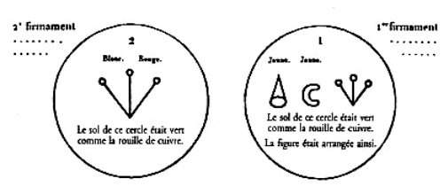
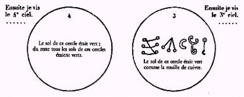
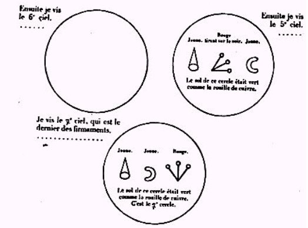
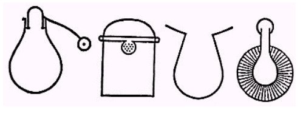

Le Livre de Crates
revu le 19 juin 2002
IntroductionLe Livre de Cratès est inséré dans un mss arabe - n° 440 - de la bibliothèque de Leyde. Il a été traduit en français par Octave Houdas. il semble qu'il s'agisse d'une sorte de compendium du savoir alchimique arabe, vers le IXe siècle ap. J.-C. Cet ouvrage est congénère du Picatrix, de l'Arcana coalestia, de la Table d'Emeraude et du livre sacré d'Abra-Melin le Mage. Le Livre de Cratès se ressent largement d'une influence des vieux alchimistes grecs : c'est dans ce livre que l'on trouve des symboles des métaux et de certains appareils, à peu près semblables à ceux du papyrus X de Leyde [cf. Chimie des Anciens, Berthelot]. Voici un extrait au sujet de ce traité :
« Its concluding words suggest that its production was due to Khalid ben Yezid (died in 708), who was a pupil of the Syrian monk Marianus, and according to the Kitdb-al-Fihrist was the first Mussulman writer on alchemy. » [http://74.1911encyclopedia.org/A/AL/ALCHEMY.htm]
Si ces rensignements sont fiables, on voit que l'on pourrait même repousser sa rédaction au VIIIe siècle ap. J.-C. Il y a plus : le Marianus dont il est question pourrait fort bien être Morienus, c'est-à-dire Morien. De là, la transition est facile à trouver avec un traité remarquable et fort ancien : les Entretiens du Roi Calid à Morien où il est question, en particulier, du fiel de verre. La matière de cet ouvrage, comme d'habitude, est passablement aride. C'est du cuivre qu'il est surtout question, non envisagé comme cuivre vulgaire, mais sans doute comme alliage philosophique. On y trouve une relation fort intéressante sur l'androdamas et sur l'eau de soufre [polysulfure de calcium]. L'eau de soufre est appelée par Zosime eau divine et les alchimistes la citent souvent dans leurs traités. Dans certaines conditions, le sulfure de calcium peut être phosphorescent [cf. Berthelot]. Ce polysulfure de calcium peut attaquer l'or à sec, et peut teindre les métaux par la voie humide [bien sûr, il ne s'agit nullement de transmutation]. Notez que le bisulfure de calcium peut être utilisé dans la préparation de la potasse mais il s'agit d'un procédé qui ne pouvait pas être connu des anciens alchimistes [cf. compendium]. Ainsi, la matière première est figurée par un bois d'où la première matière est extraite par une eau bénite, c'est-à-dire du foie de soufre terreux [polysulfure de calcium] : c'est l'allégorie qui nous est exposée lorsque l'Artiste projette une eau spéciale sur le dragon [envisagé comme prima materia] qui le désagrège aussitôt. Mais, redisons-le, il ne s'agit là que de procédés permettant de teindre les métaux en superficie et qui relèvent de la simple spagyrie. La fin du texte est assez prolixe.
Voici à présent un texte que nous devons à l'obligeance de M. Philippe Litzler à qui nous exprimons notre gratitude :
Avant-propos sur le Livre de Cratès
Nous devons cette première publication complète - à ma connaissance - à Didier Kahn pour les Belles Lettres (Paris, 1994). Ce texte se trouve effectivement placé à la fin du recueil intitulé La Table d’Emeraude et sa tradition alchimique, où le célèbre chercheur nous présente une série de versions différentes de la fameuse Tabula Smaragdina, suivi des Sept Traités ou Chapitres Dorés d’Hermès Trismégiste.
Pour Didier Kahn, ce traité est en droite ligne avec les élucubrations mystérieuses de la Table d’Emeraude et plus particulièrement avec celles du Livre du Secret de la Création, attribué au pseudo-Apollonios de Tyane (dont Fulcanelli fit grand cas), et qui contient notre fameuse table sur sa dernière page. Il en place la génèse au IXe ou Xe siècle et reprend l’idée de Ruska selon laquelle ce texte aurait été écrit par un copte de culture grecque, ce qui supprimerait toutes les difficultés liées à sa provenance.
Didier Kahn, que je salue au passage, est un excellent chercheur en Alchimie, mais plutôt historien que chimiste. Or, comme il ne croit pas à l’hypothèse de la Pierre philosophale, il est donc incapable de juger de la qualité de ce texte. Pour ma part, je considère que ce dernier doit être placé parmi les trois ou quatre traités les plus importants, à côté de la Table d’Emeraude, de la Tourbe ou de Senior !Ce traité nous raconte deux provenance différente et je suis d’avis qu’il fut trouvé par un Arabe musulman qui y ajouta quelques commentaires au début (et peut-être n’y comprit-il lui-même pas grand chose). L’origine probable doit être recherchée à Alexandrie, et pourquoi pas au Temple de Sérapis qui possédait effectivement une bibliothèque, annexe de la grande ?
Ce livre est donc relativement ancien. Il permet d’ailleurs de comprendre le codage mis en place dans l’Alchimie par Bolos de Mendès. Cratès nous dévoile clairement - le premier - les noms différents que reçoit la Pierre à chaque changement de couleur. Ainsi ce ne sont pas 7 ou 10 substances différentes qu’il faut mélanger, car ces substances ainsi nommées ne sont que des analogies qui déterminent la qualité que prend la Pierre au fur et à mesure de sa transformation (il faut entendre par là les changements de couleur). Cratès, en bon aristotélitien, nous rappelle également qu’un corps ne peut exister sans son âme. Et n’oublions pas que ce qui est bon pour le corps l’est également pour l’âme…
Deux autres détails, si cela était nécessaire, nous indiquent que celui qui écrit sous le pseudonyme de Cratès était un véritable Adepte. D’abord il nous parle des vases contenant l’Eau, et ce n’est pas un hasard s’ils sont près du temple de Vénus qui se trouve être le fameux sanctuaire de Phta (dont Zozime soupçonnait déjà qu’il était dévolu à la pratique alchimique). Mais il est clair que cette indication n’est pas très originale, sauf si on lit, lit et relit ce qui est écrit ! Deuxièmement Cratès nous parle du combat avec le dragon, que ne renierait pas Fulcanelli qui nous entretint, en son temps, du combat entre la Salamandre et le Rémore… Preuve de plus qu’avec ce dragon, Cratès nous donne une indication des plus charitables. En effet, celui qui ignore ce qu’est ce dragon (qui se mord la queue, de temps à autre) ferait mieux de se consacrer à l’étude des contes de fées. Vous êtes-vous déjà demandé pourquoi Blanche Neige faillit mourir à cause d’un simple peigne ? Il y a entre ce peigne et ce dragon une très grande afinité.
Je vous souhaite une lecture agréable de ce livre, qui est extraordinaire à tout point de vue.
Philippe Litzler
Texte Au nom du Dieu ciment et miséricordieux ! Seigneur, faites-nous la grâce de nous conduire dans la bonne voie ! Louange à Dieu qui nous comble de ses bienfaits ! Qu’il répande ses bénédictions sur notre seigneur Mohammed, son prophète, et qu’il lui accorde le salut, ainsi qu’à sa famille ! Fosathar de Misr est le premier qui s’attribua le titre d’émir. (L’auteur dit ensuite:) On m’avait informé que l’émir répétait que, d’après ce qui lui avait été raconté, je n’avais jamais cessé de m’occuper de l’œuvre ; sur cette matière, j’avais rassemblé bien des choses qu’aucune autre personne de notre époque n’avait pu recueillir. Je dois ajouter que l’émir était adepte de la philosophie, et qu’il pratiquait les doctrines retracées dans les ouvrages des philosophes, conformément aux livres où il les avait tr[ouv]ées réunies. La demande que l’émir me fit, de lui donner des extraits d’ouvrages dont il serait apte à tirer profit, ne pouvait m’être adressée impérativement par un autre que par lui. C’était en réalité un ordre, et, étant donné le rang qu’il occupait, je devais mettre tous mes soins à lui rendre ce service, Peu de philosophes ont accueilli favorablement de telles demandes : ils ont, en effet, recommandé bien souvent de ne pas divulguer la science à ceux qui n’en étaient pas les adeptes ; mais ils ont dit aussi de ne pas s’en montrer avare à l’égard des initiés.
Je vous adresse un de mes livres sur la philosophie ; si les Anciens avaient pu le lire, ils n’en auraient sûrement pas divulgué le contenu. Pas un seul de ces philosophes n’a composé un traité semblable, et quand ils ont formulé d’une manière aussi complète leurs doctrines philosophiques, ils les ont tenues secrètes et ne les ont point divulguées au public, ni même à la plupart de leurs adeptes. Il en a été ainsi sous les premiers califes, et cela a duré jusqu’au moment où le christianisme fût éliminé.
Voici maintenant l’histoire de ce livre : il avait pour titre Kenz el-konouz (le trésor des trésors), et faisait partie de la collection des trésors des philosophes, que l’on conservait dans les sanctuaires des divinités. La principale de ces divinités était à Alexandrie et s’appelait [...]. Or il y avait à Alexandrie un Jeune homme nommé Risourès, qui appartenait à une famille dont les membres étaient adeptes de la philosophie. Ce jeune homme au visage resplendissant, à la taille svelte et doué de l’intelligence la plus accomplie, fît la cour à l’une des servantes du chef des devins du temple de Sérapis. Ce temple se nommait Athineh et le chef des devins Ephestelios. Risourès ayant réussi à se faire aimer de la servante et à l’épouser, celle-ci lui montra tous les livres et lui fît connaître tous les autres mystères des philosophes. Puis, lorsqu’on apprit que Constantin le Grand était à Rome, elle déroba les livres de Sérapis, ainsi que ce livre que je vous envoie, et elle s’enfuit avec son mari. Jusqu’au moment ou le christianisme cessa d’être florissant en Syrie et en Egypte, telle est l’histoire de ce livre ; tous les souverains l’ont étudié longuement, jusqu’au jour où les dynasties arabes se sont établies dans les pays de Syrie et d’Egypte.
A ce moment, ce livre m’étant parvenu, je vous l’ai adressé, en recommandant bien de n’y rien changer. J’avais tout d’abord songé à le faire traduire, et le traducteur était déjà prêt quand, en réfléchissant à la différence que présentent le grec et l’arabe comme style et comme marche du discours, j’ai renoncé à ce projet ; invoquant l’assistance de l’Esprit Saint, je vous le fais parvenir, afin que vous le transmettiez à votre tour.(Le livre) commence en ces termes :
Au nom du Dieu clément et miséricordieux !
J’avais achevé l’étude des astres, celle de la superficie de la terre, de sa position et de ses éléments variés ; j’avais terminé l’étude de la science du droit et des formes de la logique, lorsque je vins au temple de Sérapis, en proclamant qu’il n’y a d’autre divinité que Dieu le Créateur. Je trouvai là, dans la bibliothèque du roi, un livre clair, sans expressions obscures et qui traitait de l’œuvre sublime dont Dieu a réservé la connaissance aux personnes qui possèdent la sagesse et [...]. Jamais livre plus admirable et plus clair n’a été composé avant le mien et rien de pareil ne sera composé par la suite, car j’ai acquis une science certaine. J’ai apporté mon livre et je l’ai caché dans le sanctuaire du temple de Sérapis ; ce n’est qu’avec la permission de Dieu et sur sa désignation spéciale que quelqu’un pourra s’en emparer.
Tandis que j’étais en train de prier et de demander à mon Créateur d’éloigner de moi le serpent qui se glisse dans les cœurs des humains et de m’aider dans l’entreprise que j’avais formée de composer mon livre, je me sentis tout à coup emporté dans les airs, en suivant la même route que le soleil et la lune. [la même relation est rapportée, à peu près, par Cyliani alors qu'il s'endort sous un chêne] Je vis alors dans ma main un parchemin intitulé : Modzhib ed-dholma ou monawwir ed-dhou (Celui qui chasse les ténèbres et qui fait resplendir la clarté). Sur ce parchemin étaient tracées des figures représentant les sept cieux, l’image des deux grands astres brillants et les cinq astres errants qui suivent une route opposée. Chaque ciel était entouré d’une légende écrite avec les étoiles.
Puis, je vis un vieillard, le plus beau des hommes, assis dans une chaire ; il était revêtu de vêtements blancs et tenait à la main une planche de la chaire, sur laquelle était placé un livre. Devant lui étaient des vases admirables, les plus merveilleux que j’eusse jamais vus. Quand je demandai quel était ce vieillard, on me répondit :« C’est Hermès Trismégiste, et le livre qui est devant lui est un de ceux qui contiennent l’explication des secrets qu’il a cachés aux hommes. Retiens bien tout ce que tu vois et retiens tout ce que tu liras ou entendras, pour le décrire à tes semblables après toi. Mais ne va pas au-delà de ce qui t’aura été ordonné, lorsque tu voudras leur expliquer les choses ; ce sera agir dans leur intérêt et te montrer bienveillant à leur égard. »
[sur les écrits attribués à Hermès et proprement alchimiques, cf. Table d'Emeraude, Sept Chapitres dorés et Dialogue de Marie à Aros. Nous y rattacherions volontiers les Entretiens de Calid à Morien]
Voici ce qu’il y avait tout d’abord : des figures de cercles, autour desquels il y avait des inscriptions ainsi tracées : (En marge le manuscrit contient les lignes suivantes :
J’ai trouvé une seconde copie, dans laquelle étaient des cercles entourés d’une inscription. On trouvera cette inscription indiquée en marge. Il y avait sept cercles correspondant au premier firmament, au second, au troisième et ainsi de suite jusqu’au septième. Au-dessous de chaque cercle se trouvaient des lettres sans points diacritiques que j’ai reproduites.)
FIGURE I[à gauche, une indication sur le ternaire, qui semble une figure reprise de l'image à droite où l'on distingue le symbole de l'or - à gauche - de l'argent, à droite. Ce symbole ternaire semble s'apparenter au Mercure. La couleur verte fait référence au Lion vert des anciens alchimistes, c'est-à-dire à leur dissolvant - la rouille de cuivre se dit en grec ioV -]

FIGURE II[à droite, image 3, on remarque que des trois symboles de la figure 1, l'Or a disparu. A la place, à droite, deux dessins dans lesquels on remarque un symbole qui peut s'apparenter à celui du Taureau - les cornes - et encore plus à droite, ce qui semble être l'amalgame philosophique entre le Soleil et la Lune. Le symbole de gauche est énigmatique.]

FIGURE III[à droite, en haut, 5ème image, on retrouve les mêmes symboles qu'à l'image 1 mais ils ont été déplacés : l'Or est resté à sa place, la Lune a été disposée à droite et le signe qui semble s'apparenter au Mercure est au centre ; il a subi une rotation. La figure 6 est vide ; la septième montre les mêmes éléments que la 5ème, mais le symbole de la Lune a été inversé et le Mercure a retrouvé sa disposition initiale]
Définition de la pierre qui n’est pas pierre, ni de la nature de la pierre : c’est une pierre qui est engendrée chaque année ; sa mine se trouve sur les sommets des montagnes. [de nombreux textes disent que la minière de leur matière est pierre et non pierre ; c'est ainsi que s'expriment les alchimistes de Flers, comme Grosparmy et Nicolas de Valois. L'allusion au sommet des montagnes est soit une indication sur la conjonction des matières ; auquel cas il ne s'agit pas de la prima materia qui est ainsi nommée ; soit une indication sur la couleur de l'azur ]
C’est un minerai contenu dans le sable et dans les roches de toutes les montagnes ; il se trouve aussi dans les matières colorantes, dans les mers, dans les arbres, dans les plantes et les eaux, et tout ce qui est analogue. [il s'agit du véritable sel armoniac, c'est-à-dire du sel d'Ammon dans lequel on a fait miroîter aux impétrants le chlorhydrate d'ammoniaque vulgaire] Dès que vous l’aurez reconnu, prenez-le et faites-en de la chaux. Extrayez-en l’âme, le corps et l’esprit ; puis séparez chacune de ces choses et placez-les chacune dans le vase connu qui lui est attribué. [c'est-à-dire le vase de nature] Mélangez les couleurs, comme le font les peintres pour le noir, le blanc, le jaune et le rouge, et comme le font les médecins dans leurs mixtures, où entrent l’humide et le sec, le chaud et le froid, le mou et le dur, de façon à obtenir un mélange bien équilibré et favorable aux corps. [on distingue ici les corps simples, les corps composés et les composés des composés, cf. Chevreul, critique d'Artephius] Cela se fait à l’aide de poids déterminés, selon lesquels se combinent les choses pondérées ; puis on confond en une seule les qualités diverses. Je viens de vous en donner un exemple ; je vous ai enseigné les principes certains et les mystères, en les dégageant des énigmes dans lesquelles les Anciens les avaient enveloppés. Ne vous écartez pas de la description qui se trouve dans le volume qui a pour titre : Modzhib ed-dholma ou monawwir ed-dhou. (Ensuite il y avait les figures ci-dessous qui entouraient le manuscrit dans le sens de la longueur) :
FIGURE IV[de gauche à droite : alambic avec son appareil et le symbole solaire, kérotakis, appareil pour digestion et matras au bain de sable]
Quand j’eus fini d’examiner ces figures et que j’en eus saisi les qualités secrètes, je me penchai pour lire ce que contenait le volume qu’Hermès tenait à la main. J’y vis la description de deux hommes dont l’un ne songeait qu’aux biens de ce monde et à ses joies ; tandis que l’autre n’avait souci que de la vertu, de la sagesse, de la paix et du bien, conformément aux principes de la religion révélée. Chacun d’eux croyait être dans la bonne voie. L’un s’appelait Thatha men El-Hokama (il s’est incliné devant les philosophes) ; c’était l’homme vertueux et spiritualiste ; quant à l’autre, je ne sus point son nom. Ils avaient discuté entre eux sur une question. Le spiritualiste avait dit à l’autre :
« Es-tu capable de connaître ton âme d’une manière complète ? Si tu la connaissais comme il convient, et si tu savais ce qui peut la rendre meilleure, tu serais apte à reconnaître que les noms que les philosophes lui ont donnés autrefois ne sont point ses noms véritables. »
Quand j’eus lu ces mots dans le volume, je frappai mes mains l’une contre l’autre et m’écriai :
« O noms douteux qui ressemblez aux noms véritables, que d’erreurs et d’angoisses vous avez provoquées parmi les hommes !»
Alors il me sembla qu’un ange me répondait :
« Tu as raison ; telle a été l’œuvre des philosophes, et c’est là ce qu’ils ont mis dans leurs livres ; car l’un l’a appelée la Magnésie ; un autre, dans son livre, l’a nommée le grand Electrum ; un troisième lui a donné le nom du grand Androdamas ; un quatrième, Harchqal ; un cinquième, la pierre de l’eau de fer ; un sixième, (la pierre) plus précieuse que l’eau d’or. Enfin aucun philosophe n’a voulu accepter la dénomination dont s’était servi son prédécesseur, pour désigner l’opération. Sans doute la chose était la même, identiques étaient les voies et moyens ; mais la divergence portait sur l’appellation. Chacun de ceux qui étaient arrivés au sommet de la science prétendait formuler une dénomination d’origine différente de celle de son concurrent, et c’est pour cette cause que la confusion s’est accrue. On a agi de même pour l’opération, les couleurs et les poids. Ils ont troublé tous ceux qui, après eux, ont suivi leurs doctrines et les ont induits en doute ; si bien que la plupart ont nié que tout cela fût une chose vraie. »
[la magnésie semble être le Mercure ; l'électrum était un alliage d'or et de mercure appelé aussi asèm ; mais ici, il s'agit soit du Rebis soit du Mercure philosophique - grand Electrum - sur l'androdoamas, on trouve ces lignes dans la Tentation de saint Antoine, sur la plante Balis :
« Apollonios de Tyane. Apollonius : Veux-tu que je t'enseigne où pousse la plante Balis , qui ressuscite les morts ? - Damis : Demande-lui qu'il te donne l' androdamas , qui attire l'argent, le fer et l' airain . »
Plus intéressant, il se pourrait que l'androdamas soit une substance voisine de la myrrhe, puisqu'on trouve comme synonymes au spath fluor : androdament. Le terme androdamas a aussi comme acceptions : pierre très dure, pyrite ou marcassite. Il paraît aussi que c'était une pierre que l'on trouvait dans la mer Rouge. En grec, androdamaV a le sens de « qui dompte les hommes, qui tue son époux ». La mythologie nous apprend qu'Androdamas était fille de Chthonophylle - c'est-à-dire « qui aime la terre » et de Phlias. Mais il semble aussi qu'Androdamas soit née des amours d'Hermès et de Chthonophylle. A notre époque, l'androdamas désigne la calcite, c'est-à-dire un carbonate de calcium dont les diverses couleurs sont liées au traces métalliques.]
J’interrogeai ensuite ce personnage sur la raison qui avait ainsi corrompu les gens et les avait induits en erreur. Il me répondit :
«Tu as le volume devant toi, lis-le et tu y trouveras tout ce que je t’ai enseigné. »
Je lus alors le traité sur l’eau de soufre.
[l'eau divine de Zosime est du polysulfure de calcium. le Dragon des anciens alchimistes ? ]. Rappelons que les Anciens apelaient le talc, comaris. M. Berthelot en parle dans son Introduction à la Chimie des Anciens et tout spécialement dans la section où il analyse les espèces chimiques qui produisent la coloration des pierres précieuses : l'agent commun dans les oeuvres de cet art est le talc [comaris] : on procède à l'incorporation de rouille de cuivre - cf. figures I - II et III où l'on ne cesse de dire que le sol du cercle est vert comme de la rouille de cuivre - et de comaris ; dans cet état, le mélange est cuit puis coloré par l'Eau divine [eau de soufre]. L'ensemble prend alors une teinte stable. Cette Eau étant ensuite écartée, les pierres sont chauffées et, encore chaudes, trempées dans la teinture. Plus loin, Berthelot rapporte un passage du pseudo- Démocrite : " La comaris scythique (de Scythie, région près de la Mer noire, c'est-à-dire du Pont-Euxin, allusion à la Phrygie) mélangée avec la vapeur, suffit pour tout accomplir. ". Notez encore que l'eau de soufre n'apparaît pour la première fois que dans le papyrus X de Leide ]
Je croyais, sans le moindre doute, comprendre le sens de ce que je lisais. Pensez-vous, lui dis-je, que tout cela soit évident ?
« Dieu nous préserve de l’erreur ! s’écria-t-il : tout ce qu’ils ont exposé est exact, et ils n’ont pas dit autre chose que la vérité ; mais ils ont employé des noms qui ont pu établir une confusion au sujet de la vérité. Les uns l’ont désigné d’après son goût, d’autres d’après ses caractères, ou son utilité, sans s’inquiéter de ce qui était au-delà. Sache, ô Cratès Es-Semaoui (le Céleste), qu’il n’est pas un seul philosophe qui n’ait fait tous ses efforts pour démontrer la vérité. La difficulté qu’ils ont trouvée à éclaircir ces choses pour les ignorants, les a entraînés à la prolixité. Aussi ont-ils dit ce qu’il fallait et ce qu’il ne fallait pas. Les ignorants ont traité à la façon d’un jouet ces livres qu’ils avaient entre leurs mains ; ils les ont tournés en dérision et les ont ensuite rejetés comme funestes, rebutants, attristants et dérisoires, en ce qui touche la connaissance de la vérité. — Comment, lui répliquai-je, ne serait-on pas rebuté par la lecture de ces livres et de ces volumes, dans lesquels on trouve des mots qui semblent dire les mêmes choses et qui diffèrent cependant dans leur application ? On est troublé de ne pas savoir quel est le sens qu’il faut adopter, la leçon dont on a besoin. — Je vais te dire, ô mon fils, me répondit-il, d’où viennent ces erreurs et ces ennuis funestes. Tous les hommes appartiennent nécessairement à l’une des deux catégories suivantes : la première comprend tout individu dont l’esprit est uniquement dirigé vers la sagesse, la recherche de la science, l’enseignement des lois des natures, les affinités de ces dernières, leurs avantages et leurs inconvénients. Celui qui appartient à cette catégorie se préoccupe d’avoir des livres, de les rechercher, de vouer son esprit, son âme et son corps à répandre les notions qu’ils renferment. Quand il y trouve quelque chose de clair et de précis, il en remercie Dieu ; s’il y rencontre un point obscur, il fait tous ses efforts pour en avoir une idée exacte par ses études, arriver ainsi au but qu’il s’est proposé et agir en conséquence. Dans la seconde catégorie, on rangera l’homme qui ne songe qu’à son ventre, qui ne s’inquiète ni de ce monde, ni de la vie future ; celui-là, les livres ne font qu’accroître son ignorance et son aveuglement ; aussi doit-il nécessairement être lourd d’esprit et le devenir de plus en plus. »
[nous n'avons eu de cesse, au long de nos sections, de mettre très précisément en garde le lecteur contre le danger qu'il y aurait à prendre à la lettre des paroles des alchimistes]« Vous avez raison, lui-dis-je, et vos paroles sont exactes. » Puis j’ajoutai : « Si vous m’y autorisez, je vous exposerai ce que je compte faire avec cette science merveilleuse, pour ceux qui viendront après moi. - Dis, me répondit-il. » Quand je lui eus exposé mes idées, il sourit et il ajouta : « Tes intentions sont excellentes, mais ton âme ne se résoudra jamais à divulguer la vérité, à cause des diversités des opinions et des misères de l’orgueil. - Prescrivez-moi, répartis-je, jusqu’à quel point je dois aller. »
« Ecris ceci, me dit-il : Prenez du cuivre et ce qui ressemble au cuivre, le poids de deux menn; que la ma[ti]ère soit brute et n’ait subi aucune préparation. Prenez également le même poids de mercure et de ce qui ressemble au mercure, les deux matières blanches, brutes et non préparées, pareillement. Tous ceux qui viendront après vous ne sauront pas reconnaître que ce sont des esprits, si vous ne les avez pas désignés par leurs noms. L’homme faible et non sagace qui lira cela, prendra des esprits faibles, qui ne pourront pas supporter le feu, qui n’auront aucune force, et qui seront dévorés par le feu durant l’opération. Comme il n’obtiendra rien, son angoisse et son aveuglement ne feront que s’accroître, attendu qu’il aurait dû suivre ce précepte des Anciens : rendez les corps incorporels. Sachez que le cuivre a, de même que l’homme, une âme, un esprit et un corps. Ne parle pas dans ton livre des soufres secs, ni des arsenics et autres choses semblables ; car dans toutes ces substances, il n’y a rien de bon. Tu le sais d’ailleurs, car le feu les dévore et les brûle ; on n’en peut retirer aucun profit. Quant à notre soufre, dont tu auras à parler dans ton livre, c’est un soufre qui ne brûle pas et que le feu ne peut dévorer, mais qui se volatilise sous l’action du feu. C’est pour cela que les Anciens prétendaient que les substances qui se volatilisaient contenaient l’esprit tinctorial, en même temps que la fumée. De même l’eau composée n’est parfaite qu’à la condition d’être pareille au mélange (précédent). Tout ceci est extrait textuellement du livre. Ces esprits tinctoriaux, susceptibles de se volatiliser par l’action de la chaleur intense du feu, lorsque les corps sont blanchis, il convient de les ajouter aux esprits tinctoriaux qui proviennent des corps, dont (les derniers esprits) ont été extraits par volatilisation. C’est ce produit qui, avec la permission de Dieu, fera revivre les corps, les améliorera et leur rendra l’état parfait que vous cherchez à leur donner. »
[notons que l'interlocuteur est aussi obscur que dans ses précédentes interventions. Car le cuivre peut être aussi bien le laiton que n'importe quel bronze, n'importe quel alliage. Quant aux matières blanches, s'agit-il d'argile pure, de borith ?]Je demeurai stupéfait d’admiration. Il me répéta alors ses paroles et ajouta :
« Rédige ton livre d’après les informations que je t’ai données ; sache que je suis avec toi et que je ne t’abandonnerai pas, tant que tu n’auras pas achevé ton entreprise ; elle te vaudra la faveur de Dieu. Sache aussi que la combinaison des corps n’a lieu qu’autant que les corps présentent entre eux une certaine affinité de couleur et de goût. Tu les fais fondre ensemble, afin qu’ils se mélangent et deviennent un liquide homogène, lequel s’appelle alors l’eau de soufre pure : elle ne renferme plus aucun mauvais principe. Voici un mystère éclairci. C’est avec cette substance que l’on fait le soufre sec, que les philosophes ont appelé rouille et ferment d’or, or à l’épreuve, et corail d’or (mot à mot : or de pourpre). Mais cela ne peut avoir lieu que quand le mélange des corps a constitué une substance homogène ; alors il s’appelle la chose excellente et il reçoit plusieurs noms. Ecris tout ceci, afin d’obtenir le molybdochalque, en qui réside toute vertu secrète. Néanmoins je suis d’avis que tu n’inscrives point toutes ces combinaisons multiples dans un livre destiné à ceux qui viendront après toi ; car toute l’œuvre est contenue dans le seul molybdochalque. »
[cette eau de soufre pure n'est autre que le Mercure des vieux philosophes ; c'est de cette eau permanente que naît le Soufre rouge ou teinture de la Pierre : ioV. Sur le corail d'or, cf. Atalanta fugiens, emblème XXXII - quant au molybdochalque, c'est un alliage de cuivre et de plomb ; on peut en rapprocher le claudianon -]
Lorsqu’il m’eut fait bien comprendre toutes ces choses, il disparut et je revins à moi-même. J’étais comme un homme qui se réveille la tête lourde et troublé par son sommeil. Deux choses surtout m’avaient fait une vive impression : la première, c’est qu’il m’avait détourné du projet d’écrire le livre que j’avais conçu ; la seconde, c’est qu’il n’avait pas achevé son discours, avant de disparaître à mes yeux. Alors je demandai à l’Eternel des Eternels de me recommander à cet ange, de telle façon que je pusse achever d’obtenir de lui les révélations qu’il avait commencées sur la nature des choses. Je me mis à jeûner, à prier, à rester en contemplation, jusqu’à ce qu’enfin l’ange m’apparut (encore) et me dit :
« Tu sais que quand nous parlons de ouaraq (non?) monnayé, nous voulons seulement indiquer notre argent et notre or. Quand ces substances sont mélangées dans le vase et qu’elles blanchissent, nous les appelons argent ; nous les appelons or, lorsqu’elles sont rouges. Si on y ajoute du soufre et que l’on travaille le produit, nous lui donnons alors le nom de ferment d’or, ou quelque nom de ce genre.
Ecris : Prenez les minéraux en poids voulu ; mélangez-les avec du mercure et opérez jusqu’à ce que le produit devienne un poison igné, et vous aurez ce que nous appelons du molybdochalque. Quand les corps auront été brûlés et qu’ils seront fixés, nous appellerons le produit du soufre sec. Alors il produira de l’or pur et teindra l’argent en or. (Nous n’entendons pas parler ici de l’argent du vulgaire, mais de l’argent combiné par les philosophes et auquel seul nous donnons le nom d’argent (ouaraq.) Si nous y ajoutons le reste du poison, il teindra l’or, et ce ne sera pas l’or du vulgaire, mais la combinaison qui teint en rouge et que nous appelons or. Nous vous indiquerons les poids plus tard. Quant aux corps, ils ont tous une ombre et une substance noire, qui se trouvent à la surface, dans tous les métaux qui les possèdent. Le mercure, comme tous les autres corps, a une ombre et une substance noire. Il convient d’en extraire cette ombre et cette substance noire, comme on les extrait des autres corps. »[le molybdochalque alchimique semble être un Mixte fait de cuivre spécial et de plomb, c'est-à-dire fait d'airain et de Mercure. D'abord l'oeuvre au blanc est évoqué, puis l'oeuvre au rouge. C'est peut-être ce que veulent dire les alchimistes quand ils parlent de leur Soufre blanc puis de leur Soufre rouge ; auquel cas notre hypothèse sur la nature des Soufre serait sujette à caution.]
Je lui demandai comment nous pourrions extraire l’ombre du mercure. Il me répondit : « En le mélangeant aux autres corps, car alors il est blanchi. - Comment cela ? lui dis-je, puisque les philosophes disent que le mercure seul est capable de blanchir le cuivre. - Ils devraient plutôt dire, répliqua-t-il, que le mercure est blanchi ; car les corps qui résistent au feu ne laissent rien dégager, et il n’y a que le mercure qui se dégage et se volatilise sous l’action du feu. [c'est le seul traité dans lequel, à notre connaissance, ce point de science est aussi bien dégagé ] Lorsqu’il est extrait au moyen du feu, il se volatilise, et les autres corps résistent au feu. Si vous remettez ces corps sur le feu, aussitôt qu’ils y auront été remis et que (le mercure) se sera mélangé à eux, on aura un corps pur, car il demeurera avec eux. Les esprits, sous l’action d’une chaleur violente, se dégagent de ces corps, et ces corps deviennent morts, sans esprit, puisqu’ils ont subi la volatilisation. [notez que cette chaleur violente est incomptaible avec la voie humide, preuve que ce traité doit être contemporain, sinon même antérieur, aux oeuvres de pseudo-Geber] Si on rend aux corps leurs esprits, ils redeviennent vivants. C’est pour cela que les Anciens ont dit que le cuivre avait un corps et une âme. Pourtant certaines personnes ont cherché son esprit, et pour cela elles ont opéré sur le cuivre, afin d’en faire un corps fort, capable de teindre et résistant au feu. Ces personnes-là se sont laissé séduire par [...] lorsqu’elles ont voulu transformer les esprits en corps, sans l’aide d’un corps. Personne, en effet, n’a jamais vu une âme qui fût fixée autre part que dans un corps, ni un corps qui existât sans âme. Le corps sans âme est incapable de se mouvoir, d’engendrer et de contracter union.
« Sache d’une manière certaine que tous les corps renferment des impuretés, et que les impuretés des trois corps ne peuvent être éliminées, qu’autant qu’on les mélange pour en réaliser la volatilisation. Le feu les nettoie pour ainsi dire et élimine la partie noire ; car un feu dont la chaleur est convenablement dirigée, nettoie les corps et les épure. C’est le feu seul qui les nettoie, les épure, les améliore, les affine et les fait devenir blancs et rouges. Mais il convient que je t’indique combien de fois il faut remettre du mercure dans les corps. »
[Plus que sur les matières de l'oeuvre, c'est sur le traitement de ces matières par le feu et sur les significations de ces couleurs que résident les secrets les plus hauts de l'alchimie. Nous avons eu l'occasion de dire que le NOIR, c'est la Terre et qu'obtenir le NOIR, cela signifie recueillir des cendres, c'est-à-dire des chaux métalliques que les chimistes, depuis Lavoisier, appellent des oxydes. Que le BLANC désigne l'AIR ; l'opération consiste alors à sublimer les cendres dans un milieu approprié où toute la difficulté consiste ici à imaginer qu'une sublimation intervienne non pas dans un milieu aériforme mais bien dans un milieu humide, chaux et visqueux. On peut trouver une analogie avec un mythe développé par Platon dans le Phédon, à propos des hommes poissons, cf. supra. Et que dans un temps ultérieur, le ROUGE consiste à utiliser la chaux métallique précédemment sublimée dans le solvant - le dissolvant - et de la réincruder dans un CORPS approprié. Il n'est pas indifférent à notre propos que le BLANC apparaisse avant le ROUGE. Pourquoi ? Parce que le mythe narrant l'accouchement de Latone à Délos nous dit que c'est d'abord Diane - la blancheur - qui a paru, et qui a servi ensuite de parèdre pour Apollon - la rubification - Mais tout cela doit se comprendre par l'entendement car l'on ne saurait voir des couleurs dans un creuset recouvert de sa brasque, par la voie sèche. Et la voie humide semble exclue dans la méthode décrite par Cratès... ]
— Dites-le moi, je vous prie, m’écriai-je. —
« Les Anciens, me répondit-il, ont dit que le grillage avec le plomb et le soufre constituait une première forme de grillage ; le grillage avec le mercure, la seconde. Puis ils ont ajouté : remettez les lames dans la solution, afin d’en faire sortir les impuretés : ce sera la troisième opération. Broyez avec le mercure, ce sera la quatrième. Pilez avec du miel et du collyre, ce sera la cinquième. Pilez avec de la litharge, avec du miel, ce sera la sixième. Pilez l’ozza d’or avec de l’urine de veau, ce sera la septième. »
[le mot ozza désigne peut-être l'ozh, ce qui signifie en grec « avoir une certaine odeur ». S'agirait-il du Soufre de l'Or ?]
Puis il ajouta:
« Quant à moi, j’estime qu’il faut remettre les corps dans la solution : car plus on les y met et plus on les y laisse, plus ils acquièrent de beauté et d’aptitude à la teinture. Or il faut toujours chercher le mieux, quand cela est possible. Je viens de te révéler des choses qui, je le crains, ne pourront être comprises par l’intelligence, la sagacité et la science de personne. Quant aux noms que les Anciens ont donnés, ? comme, par exemple, ceux de cuivre, d’argent, de chair, de molybdochalque, d’or, de fleur d’or, de corail d’or, ce sont là des dénominations qu’ils ont créées pour désigner l’élixir. Ils ont voulu ainsi indiquer chacune des couleurs que prend l’élixir, et ils ont suivi jusqu’au bout l’ordre dans lequel elles se produisent. Chaque fois qu’on augmentait la fluidité du mélange, une nouvelle couleur était déterminée ; à chaque changement de couleur, on donnait un nouveau nom au mélange, et sa puissance tinctoriale augmentait. Aussi les livres secrets des philosophes l’ont-ils nommé d’abord plomb ; puis quand il a été cuit et que le noir en a été extrait, on l’a appelé argent ; ensuite, lorsqu’il a été transformé, cuivre. Quand on a versé sur ce produit de l’humidité, après la rouille ; lorsque l’on a éliminé la matière noire dans la partie rouillée et qu’on a vu apparaître le jaune, on lui a donné alors le nom d’or. A la suite de la quatrième opération, nous l’avons appelé ferment d’or ; à la suite de la cinquième, or à l’épreuve ; à la suite de la sixième, corail d’or (or de pourpre) ; enfin à la suite de la septième opération, c’est l’œuvre parfaite, la teinture pénétrante.Tous ces noms ne s’acquièrent que sous l’influence du feu, et c’est grâce à lui que les opérations engendrent ces qualités, qu’aucune teinture ne développe à un si haut degré, ni avec une telle intensité et qu’on ne saurait, sans illusion, chercher à obtenir autrement. Si les gens connaissaient la puissance nécessaire pour former la meilleure qualité, ils sauraient qu’une seule matière peut donner naissance aux dix produits dénommés par les Anciens. »
[on voit ainsi le peu de crédit qu'il faut accorder aux noms des planètes se référant aux différents régimes ; ce n'est que par pure analogie qu'elles sont citées. Les alchimistes n'ont jamais fait que désigner la même matière considérée à une époque différente de l'oeuvre, et dans un aspect ou une forme différente. Quant au nombre d'opérations, 7, il est purement symbolique par référence à Apollon. Notez d'ailleurs que l'ordre des couleurs et des régimesne semble pas respecté : après le plomb, devrait succéder l'étain ; alors qu'on passe à l'argent, c'est-à-dire à la Lune. Le cuivre est ensuite nommé ce qui correspond au régime de Vénus ; la rouille au régime de Mars ; vient alors la couleur citrine, intermédiaire par rapport au jaune et au rouge. Enfin, la couleur pourpre correspond au corail]
« Montrez-moi, lui dis-je, quelle est cette matière unique qui produit les dix. — Sachez, me répondit-il, que les dix qui peuvent être ainsi formés répondent aux dix noms qui ont été établis par Démocrite, et pour chacun desquels il a déterminé une opération. Quant à la matière unique qui a plus d’effet que les dix, les philosophes ont refusé de lui donner un nom particulier ; mais lui en eussent-ils donné un, que cela n’aurait pas permis d’en tirer profit : car ils n’ont point indiqué si la matière était composée, ou simple. Celui qui voudra se servir plus tard de la propriété de cette matière, devra démontrer comment elle est composée, et pourquoi, malgré sa composition, elle est appelée unique. C’est ainsi que les laits ne portent qu’un seul nom, bien qu’ils renferment quatre natures, qui assurent l’existence de leur corps et de leur esprit ; ils n’ont qu’une seule désignation et une seule nature. Les philosophes ont procédé de cette façon : ils ont mélangé leurs ingrédients et les ont combinés, de manière à obtenir un produit homogène, auquel ils n’ont, donné qu’un seul nom. On assure qu’ils ont fait serment entre eux de ne jamais faire connaître cette chose à quelqu’un qui ne fût pas des leurs. — S’ils ont juré, répartis-je, de ne point divulguer cela, pourquoi blâment-ils les gens et leur reprochent-ils leur défaut d’intelligence, leur incapacité à trouver la vraie voie de cette science ; pourquoi blâment-ils ces gens d’entreprendre des recherches sur un sujet dont ils n’ont voulu leur donner aucune notion ? »
« Ne t’ai-je pas dit, me répondit-il, que le maître de Démocrite ne lui avait pas enseigné la combinaison des matières et qu’il l’avait laissé dans un doute poignant à cet égard ? Aussi Démocrite dut-il étudier les livres, faire des recherches, multiplier les expériences et les informations et éprouver de graves déboires, avant d’arriver à la voie droite. D’après ce qu’il raconte, il ne trouva rien de plus difficile que d’obtenir le mélange intime, propre à réaliser la combinaison des matières. »
[il s'agit du pseudo-Démocrite, appelé ausi Démocrite le Mystagogue, cf. prima materia et Chevreul -]
Je lui dis ensuite : « Laissez de côté les détails accessoires ; hâtez-vous de décrire le but et soyez bref dans votre discours ; écartez-en toute longueur et toute amplification qui ne seraient point nécessaires. » Il me répondit :
« L’opération fera blanchir le cuivre à l’extérieur et également à l’intérieur [fera blanchir le laiton, expression que les Modernes ont trouvé plus subtile] ; de même qu’il est rouillé extérieurement, il sera rouillé intérieurement [il sera envenimé. Toute projection de Soufre teingant correspond à une envenimation du Monde ; par quoi on rejoint la philosophie hermétique, Jamblique, Platon, etc.] ; enfin tout ce qui brillera à l’extérieur brillera également à l’intérieur. — Et quand il brillera tant à l’intérieur qu’à l’extérieur ? » m’écriai-je, pour essayer de l’entraîner à éclaircir toutes ces choses et à me les expliquer, la conversation échangée entre nous me conduisant enfin au but que je m’étais proposé, et à l’espérance de tirer profit de l’occasion. — « Je t’ai seulement enseigné, me dit-il, que la substance blanchira et rouillera, puis qu’elle se volatilisera. Or il faut que tu saches également que le but principal est d’obtenir la rouille [le principe de teinture : ioV] ; quand ce résultat est obtenu, tu auras le commencement de la préparation, c’est-à-dire la teinture fugace. Toute combinaison est formée de deux composants aptes à s’unir. Par exemple, l’homme et la femme sont des éléments composants ; s’il se réunissent et qu’ils s’accouplent. Dieu fait sortir d’eux un enfant, et cela en vertu de l’attrait que Dieu a mis dans chacun d’eux pour l’autre ; en sorte qu’ils sont nécessaires l’un à l’autre et qu’ils éprouvent de la joie à se rencontrer. Telle est la science de la chose unique et sa démonstration. »
« Par ma vie ! m’écriai-je, vous venez de m’expliquer clairement la matière unique et de me la démontrer. Vous prétendez donc que la matière unique, bien qu’ainsi appelée, est formée de diverses matières, et que c’est une combinaison : lorsqu’on opère sur elle, elle passe d’une couleur à une autre couleur. » — Il répondit : « Ainsi le plomb n’a pas la même énergie que la litharge et ne produit pas les mêmes effets ; la litharge, à son tour, n’a pas la même puissance que la céruse, qui, elle-même, n’agit point à l’égal du minium. [la céruse ou carbonate de plomb, par grillage, est convertie en minium. La céruse peut être obtenue à partir de vinaigre et de plomb] Ces quatre choses proviennent d’une matière unique, qui est le plomb, et cependant chacune d’elles a son caractère particulier, son énergie propre et ses qualités qui se développent sous l’influence du feu. Les gens qui ont l’esprit subtil et l’intelligence pénétrante comprendront le sens des paroles que je viens de dire. Quant aux ignorants, ils me traiteront d’imposteur, parce que leur compréhension ne leur permet pas d’atteindre à la connaissance de ce que nous venons d’exposer. Ils nieront donc la vérité, ils prétendront que le ver ne devient pas serpent et que le serpent ne devient pas dragon. [plus précisément : le serpent devient dragon ; puis le dragon devient aigle puis vautour, cf. Atalanta fugiens et le poème du phénix sur ces points] Or, vous savez que l’animal (symbolique) sur lequel opèrent les philosophes, est une certaine chose, qui de ver devient serpent, et de serpent, dragon. En effet, au début de l’opération le corps est brillant comme de l’argent, dur comme de l’or, et tantôt rouge comme du minium, tantôt noir comme les ténèbres. Celui qui traite tout cela de fable et qui prétend que ce que vous avez écrit dans ce livre n’est fait que pour donner le change sur les obscurités et les énigmes des ouvrages des Anciens, en les imitant ; il est vraiment bien étrange que cet homme n’aille pas trouver les gens qui opèrent à l’aide du plomb, de la litharge, de la céruse et du minium ; car il verrait alors que tout ce que nous avons dit est la vérité, puisque avec une seule matière ces gens-là ont fait des produits divers, auxquels ils ont donné des noms différents, quoique en réalité tout cela fût une même matière. Il en est de même de ce que nous avons expliqué. Chaque fois qu’on a fait une addition, on a obtenu une couleur nouvelle, à laquelle nous avons donné un nom, jusqu’à ce que nous ayons épuisé la série des appellations de ces divers mélanges. Au début, le corps s’est appelé molybdochalque et corps de la magnésie ; puis il a pris le nom de plomb, ou encore parfois de plomb noir, ou de plomb blanc [il faut ici différencier le blanc de plomb ou céruse, du plumbum album qui est l'étain]. Or, la chose unique, c’est le plomb, dont les Anciens ont dit qu’il avait la supériorité sur les dix. Elle est née des combinaisons de ce principe unique que nous avons appelé plomb. »
« D’après vos paroles, ô âme vertueuse, repris-je, que convient-il d’extraire de ce plomb : des couleurs, ou des matières (colorables) ? — Ce qu’il faut extraire, me répondit-il, ce sont les matières colorables, et les couleurs auxquelles les Anciens ont donné des noms de matières. Ainsi ce que nous nommons cinabre (couleur) n’est point le vrai cinabre [ce n'est donc pas le sulfure de mercure rouge vulgaire ; le cinabre est confondu avec le minium ; cf. ici les études sur la Mappae Clavicula ou Clef de Peinture] ; il en est de même des dix noms dont je t’ai parlé et que domine la matière unique ; ces substances ne sont au nombre de dix qu’en tant que noms. Mais chaque fois qu’une de ces dix substances a acquis une coloration nouvelle, nous lui avons donné un nom ; bien que ce fut toujours le même principe, c’est-à-dire le plomb dont je t’ai enseigné la nature. Il comprend des substances diverses, mélangées, accouplées et intimement réunies les unes aux autres, de façon à fournir un tout homogène. Chacune des propriétés s’est portée sur la substance qui lui correspondait, se l’est assimilée et en a fait un tout solide, non fugace, qui s’est de plus en plus consolidé. Telle est la matière unique dont je vous ai parlé et que les philosophes ont répartie entre de nombreuses opérations et de couleurs diverses, sans cependant être jamais d’accord, ni sur les substances, ni sur les couleurs, ni sur les opérations. Il en est qui lui ont donné des noms de substances solides, et d’autres des noms de substances liquides. Je t’ai livré tous les éclaircissements que j’avais projeté de te faire connaître sur ce sujet, en le dégageant de toutes les obscurités dont on l’avait enveloppé ; j’ai écarté, grâce à Dieu, tous les mystères qui entouraient la mise en oeuvre de la pratique de ce livre, mystères que les philosophes avaient entassés à dessein, pour empêcher d’obtenir les résultats indiqués en termes concis et peu intelligibles. »« Maintenant, dis-je, donnez-moi des explications sur cette matière unique, que vous appelez plomb ; et sur cette eau, c’est-à-dire sur l’eau qui en est formée. Pourquoi a-t-on nommé matière unique ce produit combiné ? Enfin mettez le comble à votre bonté en m’expliquant tout cela et en condescendant à me faire des confidences complètes [...]. Vous aurez droit alors à toute la reconnaissance de la foule des savants, et Dieu, à cause de cela, vous comblera de ses bienfaits. Surtout, soyez clair. »
« Dans ce plomb, me répondit-il, il y a les quatre natures analogues à celles que l’on retrouve en ce monde, et le secret cherché, qui a été la cause de la mort successive des hommes. Ces quatre natures ont des couleurs diverses : l’une est blanche ; l’autre rouge ; une autre noire. Quelques-unes se détruisent l’une l’autre quand on les mélange, pour former un tout homogène où domine le noir, et le blanc se trouve alors renfermé dans l’intérieur de la substance, qui est recouverte et enveloppée par la couleur noire. Tel est le cas des substances que nous nommons plomb blanc et verre noir. [les Anciens donnaient au verre noir le nom de jaïet, puis de pierre obsidienne ; le verre noir réclame de l'oxyde de manganèse, de fer et de cobalt mélangés à part égale. sans changements notables dans les Mappae clavicula , n 139, et dans le Liber diversarum artium - A noter qu'on trouve dans un mss qui est congénère de la Mapape Clavicula une formule compliquée d'un vernis appelé antimio de damia, composé avec l'amor aquae, sorte d'écume saline, le naphte, le soufre, la poix, le baume, le jaïet ou un bitume analogue, l'huile d'olive, la résine, le lait, le tout cuit ensemble avec précaution. Ce vernis servait sans doute à appliquer certaines couleurs à la surfa ce du verre.]« Sache d’une manière positive, toi qui as déjà la science et la certitude, que les Anciens n’ont pas employé la dénomination de soleil (or), et cependant ils l’ont fait entrer dans leurs combinaisons. En effet, la substance essentielle (pour les teintures), c’est-à-dire Vénus (cuivre), ne teint pas avant d’avoir été teinte. Lorsqu’elle est teinte sans avoir produit directement de l’or, elle entre dans les autres combinaisons : ceux qui la possèdent, la serrent et la gardent, car l’influence de sa couleur se manifeste sur les autres teintures. Ils l’appellent l’écrivain, lorsqu’elle est entrée dans les combinaisons. [est-ce une allusion à un sel de fer qui servait à préparer l'encre - atrament - ? Nicolas Flamel, au début des Figures Hiéroglyphiques décrit une sorte d'écritoire dont le but reste mystérieux] L’écrivain, c’est ce qui retient toute chose ; il fait vivre les corps et apparaître leurs couleurs. Pour moi, j’ordonne à tous ceux que j’aime, parmi mes fidèles, mes frères et mes disciples particuliers, de se contenter de cet écrivain ; car aucun des Anciens, comme tu le sais, ne s’est contenté de ce qui vous a été expliqué.
Pendant que je causais avec mon interlocuteur et que je lui demandais d’ajouter d’autres éclaircissements et des notions précises, pour servir à la rédaction du présent livre, je perdis tout à coup connaissance, après la disparition du soleil, et je me vis comme dans un songe, transporté dans un autre ciel et un nouveau firmament. Je me dirigeai vers Le sanctuaire de Phta qui renferme les couleurs du feu. [c'était là qu'était le « laboratoire » principal de la science égyptienne. C'est à Phta que le pseudo-Démocrite fut accueilli par le grand Ostanès] Quand j’entrai dans le sanctuaire, par la porte orientale, j’aperçus dans les cieux un grand nombre de vases d’or ; je ne vis personne se prosterner devant eux, mais seulement devant l’idole de Vénus. C’est cette idole en effet que l’on adorait dans le sanctuaire.
« Qui a fait ces vases ? » demandai-je. L’idole répondit :« Ils ont été faits avec le molybdochalque du Sage. Sache, ô Cratès, homme aux nombreux désirs, que ce n’est ni un crime ni un péché pour moi,si je t’enseigne que c’est le plomb de Temnis le Sage qui a servi à fabriquer ces vases ; mais là-dessus, garde le silence. »
Et il ajouta :
« Oui, garde le secret là-dessus ; car tous les philosophes l’ont gardé avec le plus grand soin. Cependant, je puis t’en révéler quelque chose, c’est qu’il est extrêmement froid et que les corps lui demandent la vie pour être capables de résister à l’action du feu : c’est grâce à lui que les corps (métalliques) se solidifient et se forment en lingots. »
M’adressant alors au firmament de Vénus, je lui dis :
« Je rends grâce à votre créateur. Cette nature unique qui vivifie ainsi les corps et qui leur permet de lutter contre le feu, n’est-ce pas la gomme ? - Oui, répondit-elle, c’est la gomme, non la gomme du vulgaire, mais une gomme purifiée, impérissable. [Alexandre Sethon parle d'une gomme d'or et la nomme terre d'argent. Elle est en effet d'une grande blancheur et résiste au feu, si bien qu'on l'a nommé aussi la salamandre] — Je désire, répliquai-je, en m’adressant à Vénus, faire connaître clairement cette substance à ceux qui en ignorent le secret. Comment pouvez-vous dire une pareille chose au sujet du plomb, alors que tous les livres nous enseignent qu’il faut le transformer en esprit volatil ? - Tu n’as donc pas compris les paroles de Démocrite, dans le passage de son livre : « S’il espère obtenir ce qu’il recherche. » S’il n’en était pas ainsi, il aurait dit : « Le plomb, mélange-le et éprouve-le dans la fusion bouillonnante. Ne lui faites point dire des choses fausses. »
Puis Vénus ajouta : « Si tu veux que je t’en dise davantage, sors par la porte du sud, par laquelle tu es entré, et pénètre dans ma demeure. » Je sortis par la porte du sud et je rencontrai un grand nombre de femmes : les unes entraient dans la demeure de Vénus, les autres en sortaient. Il y en avait qui vendaient des bijoux, d’autres qui en achetaient et d’autres enfin qui en fabriquaient. Il me sembla que j’étais dans un bazar très fréquenté. J’étais surpris de la quantité de bijoux qui faisaient l’objet du trafic et dont la majeure partie consistait en bracelets, couleur de pourpre mélangée, et dans lesquels on avait serti des pierres. Après avoir examiné tout cela, je vis aussi des cassettes de femmes, de couleurs diverses, formées d’or et de pierreries, et nombre de bagues, également ornées de pierreries et de perles. Cela fait, je me dirigeai vers la demeure de Vénus et j’y entrai ; ce séjour était tel que la description ne saurait en être faite. Vénus était au milieu du sanctuaire ; sa beauté défiait toute description, et elle était parée de nombreux bijoux, tels que je n’avais jamais vu les pareils. Sur sa tête il y avait un diadème de perles blanches ; dans sa main elle tenait un vase [...] de l’orifice duquel coulait sans cesse l’argent liquide. Mon regard était ébloui et mon cœur troublé par les merveilles que je voyais.
A la droite de Vénus se trouvait un devin de l’Inde, qui lui parlait secrètement à l’oreille. Je demandai tout bas quel était ce personnage, qui causait secrètement avec Vénus. On me répondit que c’était son ministre, qui voulait s’associer à elle pour [...]. Je m’approchai alors de lui pour essayer de comprendre ce qu’il disait en secret à Vénus ; il se tourna alors vers moi, en fronçant ses sourcils et me montrant un visage sévère, puis il me fît signe de décrire tous les objets contenus dans le sanctuaire.
A peine m’étais-je mis en devoir de le faire, que j’en fus détourné en voyant des gens de l’Inde qui, tous, sans exception, préparaient leurs arcs pour me décocher des flèches. L’un d’eux s’approcha de moi et me donnant une poussée, il me fît sortir, du sanctuaire, en disant : « Non, par Vénus ! je ne te laisserai pas écrire la description de ce que tu as vu dans ce sanctuaire, puisque tu as l’intention de divulguer nos secrets. » Puis il s’empara de moi et me frappa avec la plus grande violence, si bien qu’il me sembla, tant la douleur était forte, que je me réveillais, tout effrayé sur mon sort. Je me sentais le cœur malade et endolori ; mes yeux se fermèrent ensuite sous l’impression d’une vive angoisse et je m’endormis. Je venais d’éprouver ce que j’avais cherché à fuir et ce dont je voulais m’abstenir.
Tandis que j’étais ainsi, je me sentis enveloppé d’un parfum dont j’ignorais la provenance. [il semble que le narrateur ait vu un spectacle qui présente des rapports avec le Jardin des Hespérides, ou encore avec le Songe Verd du Trévisan ou bien core avec l'île enchantée du Cosmopolite] Tout à coup apparut une femme joyeuse, et qui ne pouvait contenir ses éclats de rire. Elle ressemblait à Vénus par sa beauté, et ses amis lui en avaient donné le nom, emprunté à celui de l’idole ; mais ce n’était pas son véritable nom et on ne le lui avait appliqué que parce que Vénus l’avait en grande affection. Celle qu’on nomme ainsi du nom de Vénus éprouve un tressaillement naturel, grâce auquel Dieu réunit le bien et la félicité. Elle m’interpella ainsi : « Par Vénus ! ô Cratès, jure-moi que si je t’informe d’où vient ce délicieux parfum, tu n’en parleras à personne. — Aussi vrai que j’ai reçu une votée de coups, lui répondis-je, je te promets de garder le secret là-dessus. » Aussitôt elle détacha de sa taille une ceinture d’or, dans laquelle se trouvaient incrustées deux pierres, l’une blanche et l’autre rouge [il s'agit des deux Soufres blanc et rouge. Notez que Cyliani, dans son Hermès Dévoilé, décrit deux vases qui s'apparentent pour qui sait lire entre les lignes à ces deux pierres] ; sur ces deux pierres étaient sertis deux morceaux de soufre, qui n’étaient pas des morceaux de (vrai) soufre. « Prends, me dit-elle, cette ceinture ; arrose-la avec la liqueur, jusqu’à ce qu’elle vive et qu’elle change de nature : alors il en sortira ce parfum que tu viens de sentir. »
On prétend que la substance d’où l’on extrait ces bijoux que j’ai vus sert [...], et que cette substance éprouve l’action de l’humidité et de la sécheresse [...] .
Ceci est dit pour celui qui est intelligent et qui comprend. A ce moment, je me réveillai et je me retrouvai à l’endroit que j’occupais auparavant dans ce ciel. Je vis apparaître l’ange qui m’avait promis de ne pas me quitter, avant de m’avoir donné d’une manière complète et claire les renseignements sur le sujet (qui me tourmentait). « Retourne, me dit-il, aux choses dont tu t’occupais et achève la rédaction du livre que tu as conçu, afin d’expliquer le sens des textes des Anciens et leurs discours étranges. - Parlez, m’écriai-je. - La composition blanche, me répondit-il, c’est le corps de la magnésie ; il est composé de choses fixées, réunies en une seule composition, de façon à former un tout homogène, que l’on désigne par un nom unique : c’est ce que les Anciens appelaient aussi le molybdochalque. Lorsqu’il a subi l’opération, on lui donne les dix noms, tirés des couleurs qui apparaissent au cours de l’opération sur le corps de la magnésie ; c’est pendant cette opération que le mercure agit sur les quatre corps. Les corps qui réagissent sont : le mercure, la terre brillante (?) [peut-être de l'argile pure, du kaolin], la terre tirée des quatre corps et la sélénite [il s'agit sans doute du gypse, sulfate double de calcium]. Tout cela ayant été fondu ensemble a donné naissance au corps de la magnésie. Il faut ensuite transformer le plomb noir ; alors apparaissent les dix couleurs. Toutefois, par tous ces noms que nous avons donnés, nous avons voulu entendre seulement le molybdochalque, qui est l’agent tinctorial de tous les corps entrant dans la combinaison. Or, toute combinaison est formée de deux éléments : l’un humide, l’autre sec. Si nous la soumettons à la coction, ils se confondent ensemble ; on l’appelle alors la chose excellente ; elle a de nombreux noms. Quand le produit est rouge, il s’appelle fleur d’or et ferment d’or, ou encore minium, soufre rouge, arsenic rouge. [c'est le principe de teinture] Mais, pour nous, nous avons continué à l’appeler molybdochalque, lingot et lame (métallique). Je viens de vous expliquer les noms, avant et après la cuisson, et je vous ai donné toutes les distinctions qu’il m’était possible de vous faire connaître.
Maintenant, il convient que je vous parle des diverses sortes du feu, du nombres des jours qu’il doit durer, de la variété du feu, suivant l’intensité qu’on veut obtenir à tous les degrés. Peut-être qu’en connaissant bien ce sujet, et en en faisant une étude spéciale, on arrivera à vaincre la misère laquelle ne peut être guérie autrement que par cette œuvre auguste. Les catégories de feu sont nombreuses : il y a le feu faible, le feu sous la cendre, la braise, la flamme légère, la flamme moyenne et la flamme vive. [les Anciens distinguaient le feu naturel, le feu innaturel et le feu contre nature, cf. Atalanta fugiens où cette question est traitée] L’expérience, seule, peut permettre d’obtenir les diverses sortes qui prennent place entre ces catégories. Quant au nombre de jours, le molybdochalque, dont le traitement est notre objet essentiel, se produit en un jour, ou en une fraction de jour. Plus loin, je vous dirai, en son lieu et place, le nombre de jours nécessaires pour parachever le poison et l’élixir.
Sachez, d’une façon positive, que si l’on place de l’or pur dans la combinaison, la teinture prend une couleur rouge pur ; si l’on y met de l’or blanc, la teinture est également d’un blanc éclatant. C’est pour cela que l’on trouve dans les trésors des philosophes les expressions d’or supérieur et d’or éclatant, suivant l’or qu’ils ont introduit dans leur combinaison. Quand toutes ces natures se sont mélangées et qu’elles sont devenues du molybdochalque, les natures primitives se confondent en une nature unique et elles forment une espèce unique. Lorsque la matière est dans cet état, on la verse dans un vase en verre, afin de voir comment la combinaison absorbe le liquide, et pour apercevoir aussi la succession des couleurs, celle de la combinaison à chacun de ses degrés, jusqu’à ce qu’enfin on ait obtenu le rouge généreux, formé par l’élixir.
Quant à l’agent que les philosophes ont prescrit à plusieurs reprises de mettre en œuvre, il ne convient de l’employer qu’une seule fois. Si vous voulez vous assurer de la vérité sur ce point douteux, vous n’avez qu’à examiner ce qu’en dit Démocrite, dans le passage qui commence ainsi : « de bas en haut » ; puis il revient là-dessus en disant : « de haut en bas », [cf. aussi la Table d'Emeraude] et il ajoute : « Mettez le fer, le plomb ; le plomb à cause du cuivre, et le cuivre à cause de l’argent ; puis de l’argent, du cuivre, du plomb et du fer. » Enfin il s’explique nettement en ces termes : « N’en mettez qu’une seule fois. »
Soyez assuré que l’or ne se transforme qu’avec le plomb et le cuivre. Il se dissout dans ce vinaigre, dont la composition est connue des philosophes, et il se transforme en rouille : c’est de cette rouille que les philosophes veulent parler quand ils disent : Mettez de l’or, il s’amollira ; mettez encore de l’or et ce sera du corail d’or. (Tous ces noms sont les noms véritables des corps. Quant aux indications vagues fournies par les philosophes, au sujet des matières qui ont des noms spéciaux, elles ont pour objet de désigner les corps solides et la solution. Toutefois il convient de nommer la matière unique.) Il convient de mettre du vinaigre, parce que c’est lui qui produit les couleurs. [le vinaigre aide à préparer des carbonates ou des acétates] Il n’en faut mettre qu’une fois, de façon à obtenir la rouille ; et lorsque la rouille existe déjà, alors on met aussi le vinaigre, qui fait paraître les couleurs indiquées précédemment. On le laisse réagir durant un jour; le liquide s’évapore. Quand la matière est devenue sèche, on l’arrose, et on l’introduit dans un vase, que l’on met sur le feu, jusqu’à ce que le résultat utile soit obtenu. Au premier degré, on a une sorte de boue jaune ; au second degré, cette boue est rouge ; enfin, au troisième degré, on a quelque chose qui ressemble à du safran sec et réduit en poudre. On le projette alors sur de l’argent vulgaire, et, la combinaison se pénétrant d’humidité et de sécheresse, on obtient un esprit.
Les corps ne pénètrent point les corps et ne peuvent les teindre. Ce qui les teint, c’est le poison igné et aériforme, qui demeure emprisonné dans les corps ; lui seul peut aisément pénétrer et se répandre dans les corps. Quant aux corps, ils sont épais ; ils ne peuvent ni pénétrer, ni se répandre dans un autre corps. C’est pour cela que la teinture n’augmente en aucune façon le poids d’un corps ; car ce qui le teint est un esprit qui n’a pas de poids.
Il est des gens qui, lorsqu’ils versent le poison sur l’argent le laissent une heure, d’autres deux heures, d’autres trois, d’autres quatre. Chacun laisse agir le poison suivant la connaissance qu’il a de sa force, et de manière qu’il pénètre l’argent et le teigne, et que l’argent l’absorbe. C’est cette nature que l’on nomme ouilâda (naissance), vie et teinture. On lui a donné ce nom parce que le poison, en se réunissant à l’esprit tinctorial qui est constitué par la boue (précédente), devient à son tour un esprit, au sein du corps composé avec lequel il s’unit. Quand cette substance a pénétré l’argent vivant, elle vit à son tour : ce qui se manifeste aux regards par l’apparition de la couleur. C’est ainsi que l’on place dans les écrits les sept lettres en spécifiant que cinq d’entre elles n’ont point de son. Dès qu’elle est entrée dans le corps, cette substance le fait vivre et elle y vit elle-même, aussitôt qu’elle l’a teint. Il y a parfois des teintures qui donnent des couleurs plus variées et plus belles ; mais cela tient à la perfection de l’opération, à la durée de la chaleur, de la coction, ou bien encore au grand nombre de lavages.
Maintenant, j’ai dévoilé dans ce livre la science du poison ; j’ai dit comment on opère avec lui, comment il teint et de quelle façon il se combine. Les gens intelligents ont pu en quelque sorte le voir lui-même. J’ai éclairci certaines choses, auxquelles les philosophes avaient donné des noms propres à dérouter le vulgaire. »Je cherchai ensuite à me faire expliquer les choses extraordinaires que les philosophes avaient décrites, afin que mon livre l’emportât sur tous les autres ouvrages, attendu que j’aurais en ma possession la clef de bien des choses et leur démonstration. Enfin je voulais connaître ce que les philosophes ont dit de la teinture des corps par les corps. Il me répondit : « La rouille ne provient que des soufres. En effet, toute combinaison aboutit à des molécules humides et à des molécules sèches. Quant aux particules sèches, elles consistent dans le mélange du cuivre avec le cuivre, et du mercure avec les corps. Les molécules sèches s’obtiennent par la cuisson dans le vase. Jusqu’à ce que la dessiccation se produise, que toute l’humidité s’en aille et que ce qui était blanc devienne rouge. C’est là ce que les philosophes appellent le mercure et le soufre. [Fulcanelli insiste sur le fait que les alchimistes nomment leur matière Soufre ou Mercure selon la forme qu'elle présente dans leurs opérations]
« Comment se fait-il que la teinture soit fixe et persiste au feu, alors que les philosophes disent qu’elle est fugace et volatile ? - C’est, répondit-il, parce que les corps fixes sont rendus fusibles avec les parties volatiles, et alors l’échange qui se fait entre le corps et la partie fugace amène la transformation en matière volatile.
« Pourquoi les philosophes ont-ils appelé la combinaison othsious (?) ? - C’est parce que la pierre othsious est engendrée chaque année et qu’elle a des couleurs variées, qui changent de nature chaque lunaison. On a donc nommé d’après cette pierre othsious la combinaison, parce qu’à chaque degré de l’opération elle passe d’une couleur à une autre. »
« Pourquoi les philosophes n’ont-ils pas appelé tous les changements de la combinaison des noms de blanchir ou rougir ? — Parce que, en entrant dans la combinaison, la teinture la modifie. Après la première cuisson, elle la rend blanche, et après la deuxième, rouge. Aussi n’a-t-on pas voulu se servir d’une manière générale des termes blanchir et rougir, parce que les deux premières combinaisons, la jaune et la rouge, sont les deux seules qui fixent des teintures. »
« Que signifient les deux derniers soufres ? — Les deux derniers soufres ne le sont que de nom ; car si c’étaient là réellement les deux derniers, il n’y aurait pas mélange des corps ; mais on les désigne sous le nom des deux derniers soufres, bien que ce ne soient pas des soufres. »
« Pourquoi les philosophes disent-ils que la nature se réjouit de la nature ? — Ceci a été également dit des deux soufres, qui ne sont des soufres que de nom. »
« Pourquoi les philosophes ont-ils dit que le corps fixe est celui qui emprisonne et que sa nature est hostile ? — Cela a été dit également à propos des deux soufres, qui ne sont des soufres que de nom. » [le CORPS et l'ÂME de la Pierre sont ainsi nommés]
« Pourquoi donc cette chose qui retient la teinture, qui la fait résister au feu et qui se mélange à la combinaison, n’est-elle pas visible à l’œil nu, tant qu’elle n’a pas été projetée sur l’argent vulgaire, et ne se manifeste-t-elle que quand l’opération est terminée ? - Il en est de cela comme de la goutte de sperme qui tombe dans l’utérus et qu’on ne voit pas : l’utérus retient la goutte de sperme et le sang, qui sont cuits par le feu de l’estomac, jusqu’au moment où le sperme prend la forme d’un corps et sa couleur. Tout cela se fait à l’intérieur de l’utérus, sans qu’on le voie et sans qu’on le sache, jusqu’au moment où le Créateur des âmes fait apparaî-tre au dehors l’être que l’on voit alors. Il en est exactement de même pour la chose sur laquelle tu m’as interrogé. »
« Pourquoi les philosophes ont-ils nommé leur combinaison : rouille, eau de soufre et gomme, en sorte qu’ils ont dit : semence d’or, rouille de cuivre, eau de cuivre, poison mielleux, poison agréable au goût ; enfin qu’ils ont employé des noms masculins et féminins, et des noms qui ne sont ni masculins ni féminins ? - Parce que, dans la composition de toutes ces choses, s’ils ont employé la dénomination d’eau de cuivre, c’est que le cuivre était devenu liquide ; la dénomination de semence d’or, c’est qu’ils y avaient semé de l’or. En se servant du terme : gomme morte, ils ont eu raison, car c’est après la combustion des corps et leur mortification que la combinaison devient utilisable et se transforme en esprit tinctorial. Ils ont eu également raison en donnant des noms masculins, des noms féminins et des noms neutres ; car il y a parmi ces choses des mâles et des femelles, lesquels, une fois mélangés, ne sont plus ni mâles ni femelles : par exemple, lorsqu’on les appelle lingot et lame. »
« Pourquoi appelle-t-on le corps combiné, calcaire ? — Parce que le calcaire, qui était d’abord une pierre sèche et froide, une fois cuit (et changé en chaux vive), manifeste l’esprit du feu, qui lui a donné une vie interne. »
« Qu’appelle-t-on combustion, transformation, disparition de l’ombre et production du composé incombustible ? — Tous ces noms s’appliquent au composé quand il blanchit. »
« Quelle est l’opération la plus efficace parmi celles des philosophes ? - Les opérations des philosophes peuvent toutes se réduire à une seule, et la meilleure est celle qui retient le soufre et fait rougir. Mais il convient avant tout de connaître les poids, car c’est grâce à eux que l’on devient maître de cette opération unique, que les philosophes ont ordonné d’exécuter bien et complètement, mais dans laquelle ils ont caché les poids, ainsi que leur répartition. Les uns les ont donnés approximativement et en termes obscurs ; d’autres ne les ont même pas mentionnés, pour qu’ils fussent mieux cachés et tenus plus secrets. » [cette question du poids est tout à fait étonnante et montre que, bien avant Lavoisier, les alchimistes avaient eu connaissance de la nécessité de mixer leurs éléments en des proportions définies]
« Comment, ô esprit vertueux, ceux qui viendront après nous pourront-ils connaître ces poids ? — Ils devront bien observer, quand on ne leur aura pas indiqué de poids, de mettre les matières en quantités égales. — Quelle substance faut-il peser et laquelle faut-il ne pas peser ? — Il faut mettre le molybdochalque par parties égales et pareillement pour les autres choses semblables ; quant au soufre, il doit les égaler toutes en poids. »
« Pourquoi Démocrite le Sage s’est-il plaint du mélange, en disant : Rien ne nous a été plus difficile que le mélange des natures et leur assemblage pour les combiner ? — Démocrite a eu raison. Ne savez-vous donc pas que l’œuvre entière ne peut avoir lieu qu’à la condition de connaître chaque chose en particulier ; c’est alors seulement que vous connaissez le mode suivant lequel il faut procéder au mélange, d’après les poids qui conviennent pour en assurer la parfaite exécution. Il faut donc que le philosophe sache avant toute chose et avant de mettre la main à l’œuvre si la chose est, ou n’est pas, de quelle chose elle est formée et comment elle est. »
« Pourquoi les philosophes ont-ils dit : Faites que la combinaison soit incombustible ? Or tous ordonnent de la brûler, de telle sorte qu’elle devienne comme une cendre. — Les philosophes ont eu raison dans ce qu’ils ont dit et ordonné ; car l’élixir brûlé, transformé en cendres et mélangé avec le liquide devient pareil au miel. On le fait cuire alors, jusqu’à ce qu’il se dessèche ; puis on y remet du liquide, et on répète plusieurs fois ces opérations de mélange et de cuisson, jusqu’à ce que la calcination soit complète et qu’il ne reste plus dans la combinaison rien qui n’ait été brûlé ; il faut enfin que la combinaison soit transformée en cendres, telles qu’on ne puisse plus les brûler de nouveau. Il en est ainsi du bois que le feu ne cesse de consumer, jusqu’à ce qu’il l’ait réduit en cendres ; mais ces cendres, une fois retirées du feu, ne peuvent plus êtres brûlées. On peut encore comparer la combinaison à la fièvre qui s’empare de l’homme et ne le quitte plus, avant d’avoir brûlé toute les superfluités de son corps, superfluités qui sont précisément les causes de cette fièvre. Quand toutes ces superfluités ont été consumées, la fièvre quitte l’homme. Les philosophes ont donc ordonné de brûler la combinaison, jusqu’à ce qu’on ne puisse plus la brûler davantage. »
« Pourquoi les philosophes ont-ils dit : Amalgamez les parcelles du ferment d’or avec le mercure, jusqu’à production d’un tout homogène ? En disant cela ils étaient d’accord pour l’amalgame. Quand les teinturiers dorent les armes et qu’ils amalgament l’or avec le mercure, pourquoi l’or devient-il blanc et paraît-il tel aux yeux, puis, quand la cuisson est achevée et l’opération terminée, devient-il rouge ? — Il en est de même (dans notre opération) du mercure, qui dompte d’abord les parcelles de l’or et les blanchit, en faisant disparaître la couleur rouge ; mais le mercure, dompté à son tour, laisse reparaître à la fin la couleur rouge, si bien que l’on ne retrouve plus le blanc et qu’on ne le voit plus. »
« Comment les quatre natures se subjuguent-elles l’une l’autre et comment se mélangent-elles les unes aux autres, pour donner comme résultat les êtres créés ? — Comprenez bien ceci : les matières compactes des quatre natures se mélangent simplement les unes aux autres : mais ce sont seulement les matières subtiles qui se joignent ensemble, lors du mélange, et qui se pénètrent l’une l’autre. Les matières subtiles agissent sur les matières subtiles, non les compactes sur les compactes. Ainsi la terre et l’eau sont des éléments compacts, tandis que l’air et le feu sont des éléments subtils. Les deux éléments subtils affaiblissent les deux éléments compacts et les transforment en matières subtiles, et Dieu en fait sortir tous les êtres créés, au moyen de la cuisson et de l’absorption de l’air. Ainsi nous avons ici deux éléments compacts et deux éléments subtils : les deux éléments subtils sont ceux qui pénètrent les deux élé-ments compacts et les rendent subtils.
« De même il y a dans l’année quatre saisons ; chacune d’elles a son tempérament spécial : la première est l’hiver avec le froid ; la seconde, l’été ; la troisième, le fort de l’été ; la quatrième, l’automne. L’hiver et le froid resserrent la terre et ce qu’elle renferme de semences, de telle sorte qu’ils en expriment et font sortir les premières plantes. Dans la seconde saison, l’été, les plantes et les semences acquièrent leur développement complet et leur maturité. Si le fort de l’été, avec son soleil ardent, atteignait ces plantes (dès le début), il les brûlerait et les endommagerait ; mais le printemps les préserve, par sa température moyenne : de telle sorte que vous voyez les plantes acquérir de la force et se développer. Quand la chaleur intense du fort de l’été atteint les plantes, elle en fait sortir les fruits, qui prennent leur grosseur et leur forme. Si cette chaleur intense continuait à agir sur ces plantes et sur ces fruits, elle les brûlerait et les endommagerait. C’est alors que survient pour ces fruits la quatrième saison, l’automne, pendant laquelle la température de l’air est moyenne. Les fruits s’améliorent à cette époque ; ils prennent de la couleur, acquièrent le bon goût de la maturité et sont utilisés par les hommes.
Il convient d’opérer sur notre combinaison et de faire agir sur elle les divers degrés du feu, d’une manière analogue à celle (des saisons), que les philosophes ont prise comme terme de comparaison. Quant à moi, je vous ordonne de ne point dédaigner un seul mot, ni une seule comparaison des livres des philosophes ; car ils n’y ont rien mis qui ne fût la vérité. »
A ce moment mes yeux se fermèrent malgré moi, et sous l’empire de mes préoccupations je m’endormis. Il me sembla que j’étais sur les bords du Nil, sur un rocher qui dominait le fleuve. Tout à coup je vis un jeune homme vigoureux qui luttait contre un dragon. Au moment où le jeune homme se précipitait sur le dragon, celui-ci souffla contre lui et siffla violemment, en relevant la tête. Le jeune homme m’appela à son secours, en me faisant signe de traverser le fleuve. Je m’élançai aussitôt et je me trouvai bientôt près de lui. Je pris une pique de fer, que je lançai contre le dragon ; mais celui-ci, se tournant vers moi, souffla avec une telle violence qu’il me fît tomber à la renverse, sans toutefois que je perdisse connaissance. Je revins à la charge une seconde fois. En me voyant retourner contre le dragon, ma pique de fer à la main, le jeune homme me cria : « Arrête, Cratès, cela ne suffira pas pour tuer le dragon. » Je m’arrêtai et je lui dis : « Eh bien ! fais-en ton affaire. » Le Jeune homme prit de l’eau qu’il jeta contre le dragon : la tête de celui-ci tomba, et il resta étendu mort. S’adressant alors au dragon, le jeune homme lui dit : « Montre le profit que l’on attend de toi. » Puis il lui prit le nombril et le pressant fortement il en fit sortir un œuf de crocodile. Comme je croyais que cet œuf était un œuf de rezin (?), je dis au jeune homme : « Vous êtes injuste à l’égard du rezin en lui enlevant un de ses œufs. — Ce n’est pas un œuf de rezin, me répondit-il, c’est un œuf de crocodile et cet œuf ne se gâte pas ; il ne se dessèche pas ; il n’est pas brûlé par le sang ; il ne se détruit pas ; mais il se transforme en une rouille, dont on tire profit. Peu à peu l’estomac en fait cuire le contenu et il sort de ce mets délicat les quatre natures : la pituite, le sang et les deux biles. Mais, ajouta-t-il, il faut d’abord que je te montre ce que c’est que ce dragon... »
Alors nous trouvâmes un rocher de batharsous (?) desséché par l’ardeur du soleil, dont l’intensité l’avait crevassé. Dans les crevasses de ce rocher se tenaient le dragon et sa femelle ; ils étaient si énormes et si languissants qu’ils ne pouvaient plus bouger [...]. Le dragon était immobile, affaissé, et n’avait plus qu’un souffle de vie. Dès qu’il me vit, il crut que je venais pour m’emparer de lui ; il sortit aussitôt de l’endroit où il était et s’enfuit dans une des fissures. Le jeune homme me montra une lance et j’aperçus à ce même moment une clarté brillante qui m effraya. « Regarde, me dit le jeune homme : ce dragon, qui tout à l’heure était mou et languissant, est maintenant ardent et dispos ; je vais le tuer avec cette lance. - Pourquoi, répliquai-je, ne lui avez-vous pas enlevé ses yeux éclatants, alors qu’il était affaibli et décrépit et avant qu’il redevînt jeune ? - Il ne faut pas, me répondit-il, que nous lui prenions ses yeux, avant de nous être emparés de sa femelle. » En lui entendant tenir ce propos, je crus qu’il voulait combattre un dragon femelle, autre que ce dragon. Je cessai alors de l’interroger, en voyant son assurance. Il prit alors le dragon et le déchira en morceaux, à l’aide de sa lance. Tous ces morceaux avaient des couleurs variées ; il réunit ensuite ensemble les morceaux d’une même couleur. Comme j’avais longuement fixé mon attention sur ce qu’il faisait, je m’aperçus que ces couleurs ressemblaient aux couleurs de notre œuvre. Il y avait des couleurs pareilles à celles de l’adamas et de l’électrum ; d’autres ressemblaient à la marcassite ferrugineuse, privée de son esprit [du vitriol vert calciné en blancheur] ; d’autres à la cadmie cendrée ; d’autres à la boue jaune et d’autres au cinabre rouge. Quand il eut achevé de réunir les couleurs semblables, il prit l’œuf de crocodile et le brisa ; puis il sépara le blanc du rouge et de l’humidité, et il mit ensuite le blanc avec le blanc, le rouge avec le rouge.
Pendant que le jeune homme était occupé à cette opération, le dragon rempli de vie s’élança ; il souffla contre nous et si je n’avais pris la précaution de jeter contre lui de l’eau vivante, qui fit tomber sa tête de son corps, il nous aurait certainement fait périr.
Quand le jeune homme vit ce qui était arrivé au dragon, il entra dans une violente colère et jura qu’il réduirait ce dragon en poussière. Puis il commença à réciter de puissantes formules magiques, jusqu’à ce que le dragon fût réduit en poussière. Il en plaça les débris dans un vase, sans trop les presser. Il en sortit de l’eau, dans laquelle il y avait un poison. Chaque fois qu’il retirait une partie de cette eau, il détournait la figure pour que rien ne pénétrât dans ses narines. Quand le jeune homme eut terminé son opération, il me dit : « O Cratès, retiens bien ce que tu viens de voir et consigne-le dans ton livre, pour ceux qui viendront après toi. Ce que tu m’as vu faire, lorsque j’ai tué ce dragon, est le secret d’Hermès Trismégiste ; il l’a caché dans son livre, car il lui a répugné de le faire connaître aux profanes. Sache que c’est moi qui te découvrais le ciel, lorsque tu y montais. Si tu n’avais pas gardé le secret sur ce que tu m’as vu faire, je t’aurais tué avant de te livrer ce secret. Et si tu décris dans ton livre ce que tu as vu et que tu veuilles en divulguer le secret, vois ce dragon que j’ai réduit en poussière et dont les couleurs se sont manifestées, il eût été funeste à ton existence et il aurait séparé ton âme de ton corps. »
En raison de l’extrême frayeur que l’engagement qu’il venait de me faire prendre m’avait fait éprouver, et des merveilles que j’avais vues et qu’il me demandait de tenir secrètes, je restai tout étourdi et je m’écriai :
« Dieu, - qu’il soit glorifié et exalté ! - m’a révélé que je devais m’abstenir de dévoiler les secrets, puisque personne des Anciens n’a pu faire chose pareille. Que celui qui trouvera ce livre craigne le Créateur des âmes et s'abandonne à lui, il arrivera au but. Quand à celui qui n’aura pas touché le but et qui n’aura pas compris l’auteur, il périra dans la douleur et le chagrin. »
Quand Khâled ben Yezid eut lu ce livre, il écrivit à Fosathar pour l’informer qu’il lui envoyait un livre, qui était joint dans la bibliothèque des Trésors au livre de Cratès, et pour lui annoncer que ce dernier livre était légèrement abrégé, mais qu’il contenait de nombreux enseignements et fournissait beaucoup d’indications sur la philosophie. Ici se termine, avec l’aide de Dieu et grâce à lui, le livre du philosophe Cratès.FIN